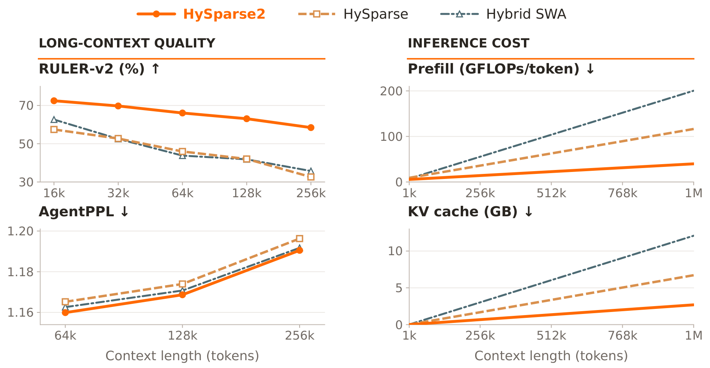
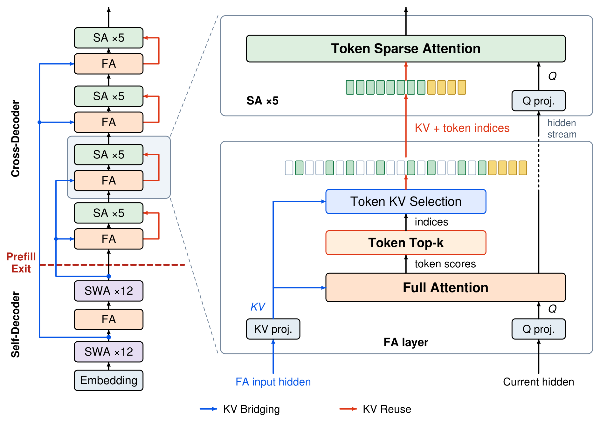
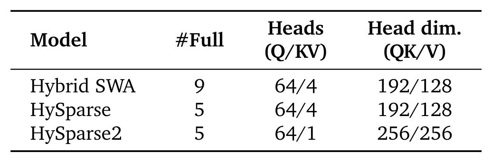
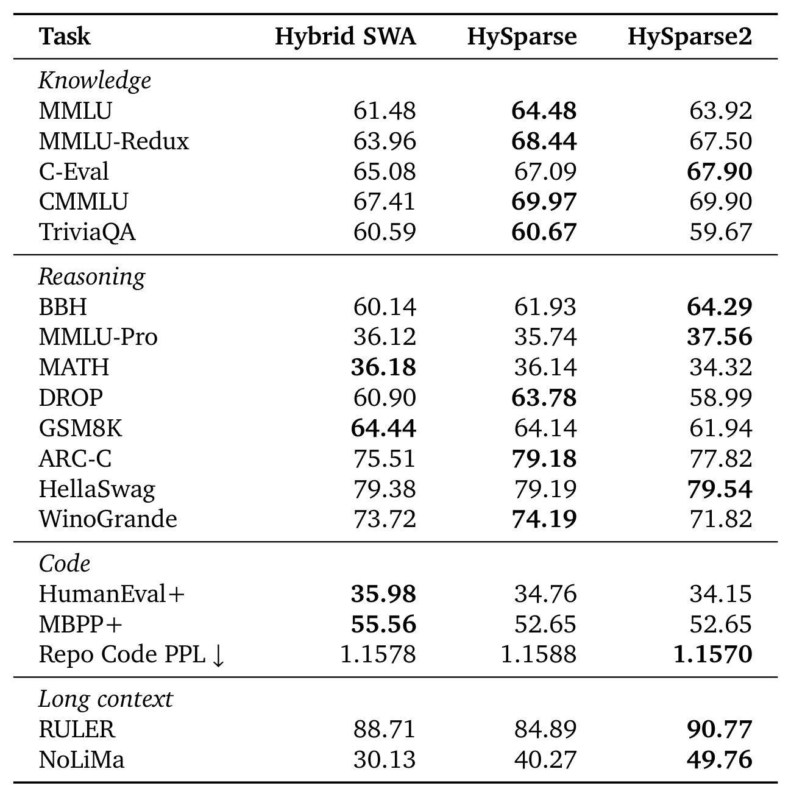
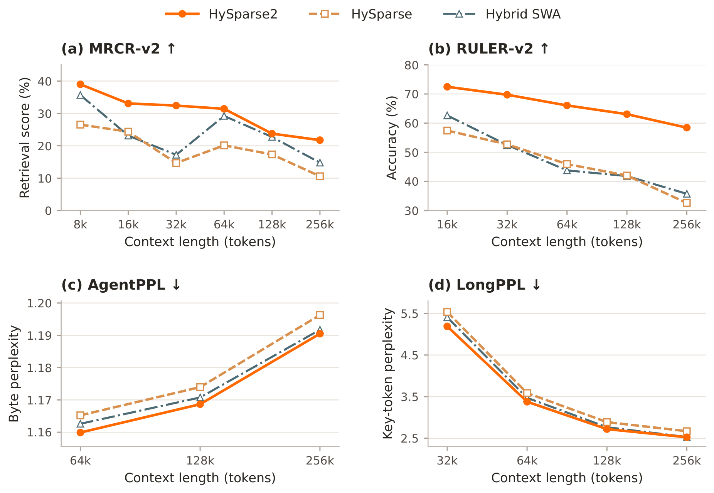
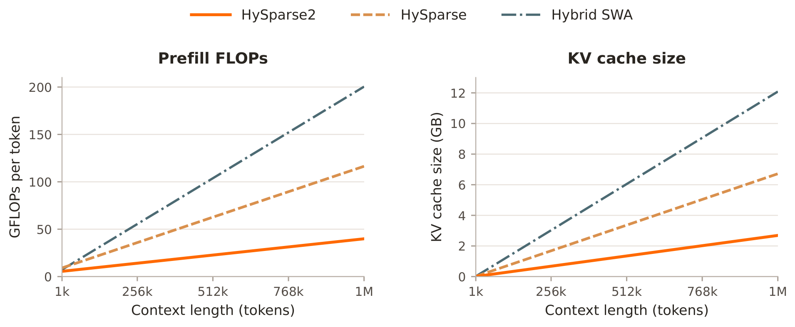
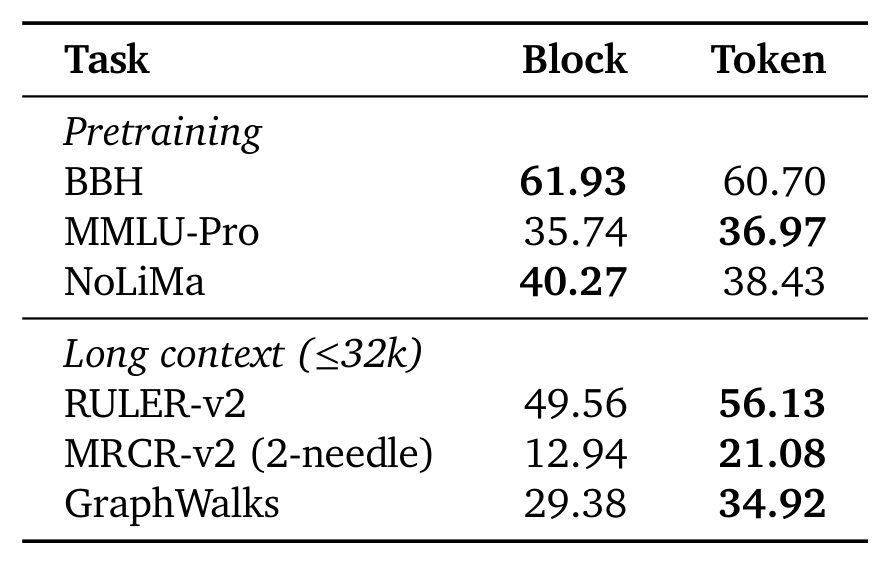
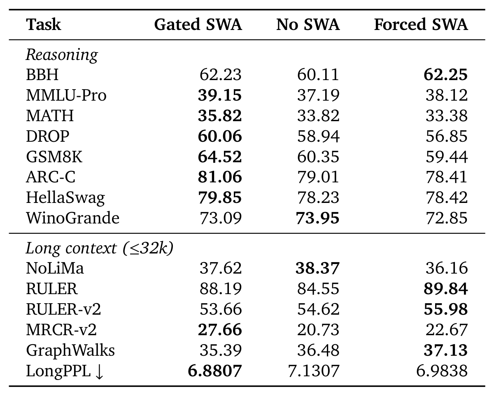
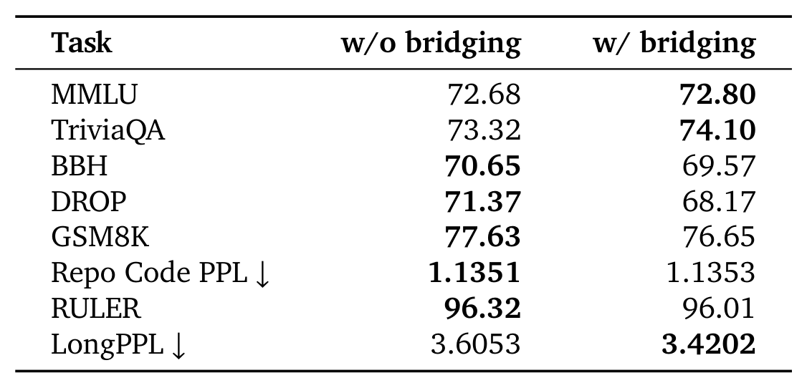
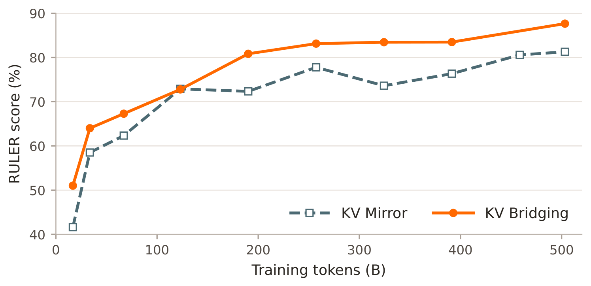

HySparse2: Hybrid Sparse Attention with Two-Level KV Sharing
Pushes cross-layer KV sharing from inside a hybrid block all the way up to the self-decoder / cross-decoder boundary — and removes the separate local-attention branch entirely, so prefill can stop after half the model.
The paper attacks a concrete engineering pain point. In long-horizon, multi-turn agentic inference the model's own actions are short, but the observations returned by tools (traces, documents, search results) are long. The context therefore becomes input-dominated: those new tokens must be prefilled efficiently, the historical KV cache has to stay small, and evidence from far back still has to be retrieved accurately.
MRCR-v2 +11.30 / RULER-v2 +19.81percentage points vs HySparse
Prefill deployment cost
First 25 layers onlyonly the self-decoder is deployed; nearly half the memory
Training recipe
500B @32k + 100Bpost-training extends context to 256k; Muon optimizer
In one sentence: HySparse2 = a YOCO-style self-decoder / cross-decoder backbone + two-level KV sharing. At the outer level, KV Bridging lets each cross-decoder full-attention layer project its own K/V from the input hidden states of a self-decoder full-attention layer. At the inner level, KV Reuse lets the sparse layers of a block reuse the full-attention layer's KV cache and selection indices. Together they mean every KV cache in the cross-decoder can be built from self-decoder hidden states, so once prefill has built those caches it can exit — never running the cross-decoder's 24 layers.
The paper's four figures split into two threads, quality and cost. Here is the overall picture:

Figure 1: HySparse2 delivers better long-context performance at lower prefill cost and smaller KV-cache storage.
Four panels: quality on the left, cost on the right. Top-left, RULER-v2: HySparse2 eases from ~71 at 16k down to ~59 at 256k, while both baselines fall below 55 after 32k and keep sliding — the gap widens with length. Bottom-left, AgentPPL: all three rise with length (more distractors in longer multi-turn trajectories), but HySparse2 hugs the lowest line across 64k–256k. Top-right, prefill: out to 1M, Hybrid SWA is steepest (~200 GFLOPs/token), HySparse in the middle (~115), and HySparse2 nearly flat at ~40. Bottom-right, KV cache: same ordering, roughly 12 GB / 6.7 GB / 2.7 GB at 1M. Panel values are read off the plot and are approximate; the paper gives exact values only for the headline points.Report p.1
💡 Click any image for the full-resolution original (300 DPI); click again or press Esc to close.
Reading conventions: every number on this page follows the paper; anything this page derives, aggregates, or converts is flagged [organized] or [estimated] so it can be told apart from the paper's own figures. Notation follows the paper: $L$ is the total layer count, $H_i^{\text{self}}$ the input hidden states of self-decoder layer $i$, $H_j^{\text{cross}}$ the input hidden states of cross-decoder layer $j$, and $k$ the top-$k$ budget. Inline citations for upstream methods use the paper's own attributions; I have not re-checked each reference entry.
The one thing to remember: the contribution is not "we saved more FLOPs". It is that locality was rewritten from a branch that needs its own hidden states into "the recent window is always a member of the sparse selection set". That rewrite removes the cross-decoder's dependence on its own layer-by-layer hidden suffix, and that is what makes "prefill runs half the model" a structural property rather than an optimization.
02 · Background & Motivation
Background: three demands
Section 2 of the paper lays out three threads of motivation, and every later design decision maps back onto one of them.
2.1 Efficient prefill: cheaper attention is not enough
Multi-turn agentic inference makes inference increasingly input-dominated — a single tool return can be orders of magnitude longer than the action that triggered it. The paper stresses one point: reducing attention cost alone does not remove the cost of propagating those tokens through the whole backbone. Even with a cheaper attention operator per layer, every layer's feed-forward still has to be computed.
Existing cross-layer KV sharing targets exactly this. YOCO (Sun et al., 2024) uses a self-decoder to build one global KV cache that the cross-decoder reuses, so prefill cache construction can exit after the self-decoder. Gemma 3n (Sanseviero and Ballantyne, 2025) adopts related cross-layer KV sharing to improve prefill efficiency. HySparse (Gao et al., 2026) does cross-layer sharing inside each hybrid sparse block: every full-attention layer hands its global KV cache and top-$k$ block indices to the sparse layers after it — but, as the paper points out, prefill still executes every layer.
2.2 The four axes of KV-cache compression
The paper sorts KV-cache compression into four axes. The taxonomy is worth keeping, because it fixes which cell this work occupies:
Head: GQA/MQA let several query heads share KV heads (Ainslie et al., 2023; Shazeer, 2019), or MLA compresses KV into latent states (Liu et al., 2024a);
Sequence: compress several tokens into fewer cache entries (DeepSeek-AI et al., 2026);
Layer: share KV caches across layers (Brandon et al., 2024; Sun et al., 2024);
Precision: lower the numerical precision of cached keys and values (Hooper et al., 2024; Liu et al., 2024b).
The paper's read is that prior work concentrates on intra-layer compression along the head, sequence, and precision axes, while HySparse2 pushes the layer axis — and not just at one level, but at two simultaneously: KV Bridging outside and KV Reuse inside.
2.3 Selection granularity: an inherent accuracy/efficiency trade-off
Sparse attention restricts each query to a subset of KV entries (Child et al., 2019), and the granularity of selection sets the accuracy/efficiency balance. HySparse originally chose block-level selection as a pragmatic compromise: evaluations showed no substantial accuracy disadvantage, and the regular block structure is friendly to efficient kernels.
But the paper argues that modern agentic workloads are long-horizon multi-turn trajectories that need precise retrieval from a long history. Under those patterns block-level selection shows a pronounced accuracy disadvantage, while token-level selection recovers relevant evidence more faithfully. At the same time, recent sparse-kernel progress (Wang et al., 2025) makes a token-level implementation practical. Together, those two facts justify the move from blocks to tokens.
Notice the shape of the argument: the paper never claims block-level is worse on pretraining. It claims it is worse under the agentic task shape. The ablation in §4.3 exists to turn that claim into something measurable — and the paper adds its own qualifier: the gains are already visible within the 32k training context.
03 · Design Rationale
Design rationale: three trade-offs
Section 3 reads as three trade-offs. Understanding them matters more than memorizing the architecture diagram, because the second one is the least replaceable step in the whole paper.
Trade-off 1: outer-level sharing happens only between full-attention layers
KV Bridging draws a hard boundary: it is established only between full-attention layers of the self-decoder and the cross-decoder — never touching SWA layers or sparse layers. The wording next to Eq. (1) reflects this, with $(i, j)$ being a full-attention-to-full-attention pair. The immediate benefit: the two decoders can use different hybrid ratios, so one self-decoder full-attention layer can supply several cross-decoder full-attention layers (in Figure 2 below, one supplies four).
Trade-off 2: remove the separate SWA branch and "force" the recent window into the selection
This is the paper's central argument and deserves restating in full. HySparse's sparse layers carry a separate gated SWA branch for local modeling. The paper observes that if such a branch were kept in the cross-decoder, the cross-decoder would have to project from its own hidden states to build a window-sized suffix of its KV cache — and those hidden states in turn depend on the hidden states of earlier layers. The paper calls this the cascading SWA dependency: the required token suffix grows linearly with depth, far longer than the window itself.
That leaves two options: compute those states during prefill (which means the cross-decoder cannot be skipped at all), or approximate them with something like bounded replay (DeepSeek-AI, 2026). HySparse2 takes a third route and removes the dependency by construction — the most recent 128 tokens are forced into the sparse selection set, so locality is served by reusing the same full-attention KV cache and needs no hidden states of its own. The paper notes this also removes the parameter cost of the separate projections in the gated baseline.
Why this step is irreplaceable: it turns local modeling from a branch that needs new hidden states into a fixed selection over an existing cache. The former is depth-dependent and cannot be truncated at the half-model point; the latter depends only on what the full-attention layer already produced. That is exactly why prefill can exit early — not an engineering trick, a structural property.
Trade-off 3: keep a few full-attention layers, and let them double as the indexer
Both HySparse2 and HySparse keep a small number of full-attention layers, for two reasons. First, full attention still matters for model quality. Second, those layers serve as the indexer, using exact attention scores to provide oracle token selection for the following sparse layers. That buys a clean training property: native end-to-end training with no separate indexer module and no auxiliary distillation objective to train one — in contrast to the routes that distil an indexer (Gao et al., 2024; DeepSeek-AI et al., 2025).
Full attention is expensive though, so its share is kept low. The paper offers two future directions: approximate the retained full-attention layers in post-training with a lightweight indexer plus sparse attention; or shift the compute allocation further toward sparsity — for instance reducing query heads in full-attention layers while increasing them in sparse-attention layers. The paper also states a deployment fact: in HySparse2, prefill KV-cache construction needs only one full-attention layer.
[organized] The three trade-offs interlock. Trade-off 2 is what makes the cross-decoder skippable; trade-off 1 is what lets one full-attention layer supply several; trade-off 3 uses very few full-attention layers to protect both quality and the selection signal. Each alone would be a local tweak — together they yield "prefill runs half the layers".
04 · Method
Method: what two-level KV sharing actually shares
HySparse2 keeps YOCO's backbone: the model is split into a self-decoder and a cross-decoder, and both use hybrid attention. What differs is the recipe — the self-decoder mixes full attention with sliding-window attention for local modeling, the cross-decoder mixes full attention with sparse attention for global retrieval. Sharing happens on two levels: KV Bridging across the two decoders outside, and KV Reuse inside each hybrid block. The figure below draws both at once:

Figure 2: Two-level KV sharing in HySparse2. FA, SWA, and SA denote full attention, sliding-window attention, and sparse attention, respectively. Left: the overall architecture with KV Bridging between the self-decoder and cross-decoder. Prefill cache construction can exit after the self-decoder. Right: a HySparse2 block with token-level sparse attention and a forced local window. Through KV Reuse, SA layers reuse the block's FA KV cache and selection indices.
Left panel, read bottom-up: Embedding → SWA×12 → FA → SWA×12 forms the self-decoder; the blue arrows (KV Bridging) fan out from the input hidden states of that single self-decoder FA layer to the cross-decoder's four FA layers; the red dashed line marks the Prefill Exit, drawn exactly where the self-decoder ends — the layers above it need not run during prefill. Right panel zooms into one hybrid block: the lower half is the FA layer, which first projects its own KV, then computes Full Attention to get token scores, passes them to Token Top-k to produce indices, and Token KV Selection uses those to pick KV entries, handing "KV + token indices" up to the sparse layer; the sparse layer reads queries through its own Q projection and runs Token Sparse Attention. The two strips of coloured cells visualize the selection: green cells are global tokens chosen by top-k, amber cells are the forced local window (anchored at the right end of the sequence), and hollow cells are unselected positions — the sparse layer and the full-attention layer read the same KV cache, they just see different subsets of it. Colour semantics are this page's reading of the figure plus the prose.Report p.4
4.1 Outer level: KV Bridging
Take a pair of full-attention layers $(i, j)$, with $i$ in the self-decoder and $j$ in the cross-decoder. The paper defines the cross-decoder layer's K, V, and Q as:
Three things matter in that equation. First, the bridging source is $H_i^{\text{self}}$, the input hidden states of the self-decoder full-attention layer, not its output — the annotation in Figure 2 reads "FA input hidden" for exactly this reason. Second, K and V come from someone else's hidden states, but the projections are the layer's own: layer $j$ owns $\operatorname{Proj}_j^{K}$ and $\operatorname{Proj}_j^{V}$, so even when several layers share one hidden-state source, each still constructs a distinct KV cache. Third, Q still comes from the layer's own current hidden states, $\operatorname{Proj}_j^{Q}(H_j^{\text{cross}})$ — the attention still relates this layer's tokens to the shared history.
Together these three points make "one self-decoder full-attention layer supplies several cross-decoder full-attention layers" unambiguous: what is supplied is the source hidden states, not already-projected K/V, so each layer can still keep its own KV representation.
4.2 Inner level: two changes to KV Reuse
HySparse2 makes two modifications to HySparse's KV Reuse, both described in §3.3.
Change one: selection granularity moves from blocks to tokens
The mechanism is direct: apply top-$k$ selection to individual tokens in the full-attention layers, and let the following sparse layers reuse the KV entries of those selected tokens. The motivation comes from §2.3 — long-horizon multi-turn agentic tasks need more precise retrieval. The ablation in §4.3 tests this explicitly.
Change two: drop the separate SWA branch, force a local window instead
Inside a block, the selection set is assembled from two parts: a local window of the most recent tokens (always included), followed by the highest-scoring tokens outside that window. Both sets are read from the full-attention layer's KV cache and reused by the following sparse layers. The paper's configuration is 128 forced local tokens plus 1,024 global tokens (that is, $k_{\text{local}} = 128$ and $k_{\text{global}} = 1024$).
It is worth lining up how the three models handle locality: Hybrid SWA uses a 128-token sliding window; HySparse selects 1,024 global tokens in 64-token blocks plus a separate 128-token SWA branch merged by gated fusion; HySparse2 simply places 128 tokens into the selection set.
4.3 Mapping the configuration onto layer numbers [organized]
The paper never prints a layer table, but matching Figure 2's boxes against the stated 49 layers gives a reading that explains a lot:
self-decoder = 25 layers: SWA×12 → FA → SWA×12, containing just one full-attention layer;
Total $25 + 24 = 49$ layers — 24 SWA, 20 SA, 5 FA — and the FA total of 5 matches Table 1's "#Full = 5".
Read together: the model has only 5 full-attention layers, and the single one in the self-decoder has to supply all four in the cross-decoder — that is what "different hybrid ratios, one-to-many bridging" looks like in the diagram; and of the 25 layers prefill must run, only one does full attention.
Section summary: the two levels are not symmetric. KV Bridging decides whether half the model can be skipped (it moves the cross-decoder's KV source into the self-decoder); KV Reuse decides whether sparse layers maintain a cache of their own (they do not — they borrow the block's full-attention one). Token-level selection and the forced window decide what the sparse layers can see.
05 · Inference System
Inference system: disaggregation and speculative decoding
Section 3.5 translates the architectural property into a deployment plan. It is short but dense, and it decides what the design is actually worth in production.
5.1 Prefill–decode disaggregation: the prefill node hosts half a model
Under prefill–decode disaggregation, HySparse2's prefill node only has to host the self-decoder plus the KV Bridging projections. For the 49-layer model in Figure 2 that means deploying only the first 25 layers and cutting the prefill node's memory requirement by nearly half. And because the self-decoder's SWA-to-full-attention ratio is high, only 1 of those 25 layers does full attention.
One easily missed detail: the paper chooses to compute the cross-decoder's full-attention KV caches on the prefill node and transfer them to the decode nodes — because the projected KV caches are smaller than the source hidden states, so shipping KV beats shipping hidden states. That is a compute-for-bandwidth trade, and it also explains why KV Bridging uses per-layer projections rather than simply passing hidden states around.
5.2 Speculative decoding: an MTP layer now, a larger drafter later
During pretraining HySparse2 uses a single MTP layer conditioned on the hidden states at the self-decoder / cross-decoder boundary, to aid convergence. In post-training that layer could be replaced by a larger DFlash-style drafter (Chen et al., 2026) conditioned on the same boundary hidden states. The paper notes these hidden states become available early, which could support asynchronous drafting and verification (Zhang et al., 2025).
The paper is careful to hedge, though: training the larger drafter and coordinating asynchronous execution with verification feedback both remain future work. In other words §5.2 is a design-possibility argument, not a demonstrated result.
Calibrate this section carefully: every cost number the paper reports is a static account — FLOPs and KV-cache bytes. The memory saved by disaggregated deployment and the availability of boundary hidden states to a drafter are conditions for that account to be realized, but the paper reports no end-to-end measured throughput or latency.
Evaluation has three parts — the overall comparison (model quality plus prefill FLOPs plus KV-cache size) and three ablations (sparse granularity, forced local window, KV Bridging). The organizing logic is clear: token-level selection buys long-context accuracy, the forced window and KV Bridging buy prefill cost, and quality is required not to move.
6.1 Setup: three models differing only in attention design
Unless stated otherwise the experiments use 80B-A3B MoE models: 49 Transformer layers, hidden size 2,048, and a simplified mHC variant (Xie et al., 2026; Zhu et al., 2025). The only difference between the three models is the attention design:

Table 1: Configurations of the three attention designs.
Three rows and three columns carry the whole comparison's premises. #Full: Hybrid SWA keeps 9 full-attention layers; HySparse and HySparse2 keep only 5. The paper explains where 9 and 5 come from — full attention in every layer is the strongest reference, and a hybrid model's full-attention count is chosen to avoid a substantial accuracy gap from it; Hybrid SWA needs 9, because using fewer significantly degrades accuracy, whereas the HySparse family stays comparable with 5. Heads (Q/KV) is the easiest variable to overlook: both baselines use GQA at 64/4 while HySparse2 uses MQA at 64/1, and head dim (QK/V) goes from 192/128 to 256/256. The paper's stated reason for MQA is "a smaller KV cache and better token sparse attention kernel efficiency". Keep this in mind when comparing KV-cache sizes — the accounting walkthrough in §6.4 uses it.Report p.6
A few more configuration details are worth recording. Within HySparse2's self-decoder, the SWA layers use partial RoPE (64 rotary dimensions, base 10,000) while the full and sparse attention layers use NoPE — which is why the paper stresses that HySparse2 needs no RoPE adjustment for long-context extension. Across all three configurations, every sparse and SWA layer uses sigmoid output gates (Qiu et al., 2025) and learnable per-head sink biases (Agarwal et al., 2025).
On training: pretraining runs about 500B tokens at a 32k context; a light post-training stage adds roughly 100B tokens, introduces agentic data into the mixture, and extends the context to 256k. Within each stage all three models share the same data mixture and schedule. The Muon optimizer (Jordan et al., 2024) with a WSD schedule, peak learning rates $10^{-3}$ for pretraining and $5\times10^{-5}$ for post-training. The overall comparison reports both pretraining and post-training results; ablations report pretraining only.
Evaluation spans four families: knowledge (MMLU, MMLU-Redux, C-Eval, CMMLU, TriviaQA), reasoning (BBH, MATH, DROP, GSM8K, ARC-C, HellaSwag, WinoGrande), code (HumanEval+, MBPP+, Repo Code PPL) and long context (RULER, NoLiMa). Repo Code PPL is an internal benchmark reporting byte perplexity over long code repositories with cross-file dependencies, so it also probes long-context modeling. The post-training stage focuses on two groups: multi-turn retrieval (MRCR-v2, RULER-v2, GraphWalks) and long-context likelihood (AgentPPL, LongPPL). AgentPPL is an internal benchmark built from multi-turn agent trajectories, reporting byte perplexity on the reasoning, tool-call, and response segments of 1,000 trajectories; LongPPL (Fang et al., 2024) computes perplexity only on selected tokens that depend on long-range context, over 349 examples; MRCR-v2 (Vodrahalli et al., 2024) is multi-round retrieval with 2/4/8 needles; RULER-v2 (Hsieh et al., 2025) covers 12 retrieval and QA subtasks; GraphWalks (OpenAI, 2025) tests multi-hop graph traversal. Retrieval averages weight the reported context lengths equally.
6.2 Pretraining: strongest on long context, a mixed account elsewhere

Table 2: Pretraining performance of the 80B-A3B models. HySparse2 improves long-context performance while remaining broadly comparable to both baselines on general capabilities.
Reading it as the paper summarizes: it is best on the two long-context entries — RULER 90.77 (5.88 above HySparse and the highest of the three), NoLiMa 49.76 (9.49 above HySparse, where Hybrid SWA manages only 30.13) — and its Repo Code PPL of 1.1570 is the lowest. General capabilities are a mixed result: HySparse2 is stronger on BBH (64.29) and MMLU-Pro (37.56), while HySparse holds an edge on DROP. A caution from this page: the table also contains a batch of gaps the prose never itemizes. Against HySparse, DROP 58.99 vs 63.78 (−4.79), GSM8K 61.94 vs 64.14 (−2.20), MATH 34.32 vs 36.14 (−1.82), WinoGrande 71.82 vs 74.19 (−2.37), MMLU 63.92 vs 64.48. Against Hybrid SWA it is +2.44 on MMLU but lower on DROP (−1.91), GSM8K (−2.50), MATH (−1.86) and MBPP+ (−2.91). "Broadly comparable" does hold, but the price is paid mostly on reasoning and code tasks — a reasonable expectation to carry into the rest of the paper.Report p.7
6.3 Post-training: ahead on four metrics at every length
After the same light post-training stage of about 100B tokens, the picture gets much cleaner:

Figure 3: Long-context performance after a light post-training stage. HySparse2 achieves higher retrieval scores and lower perplexity than both baselines across all evaluated context lengths.
(a) MRCR-v2: HySparse2 eases from about 39 at 8k to about 22 at 256k, staying above both baselines throughout; Hybrid SWA has a visible rebound at 64k (about 29) but apart from 32k stays below HySparse2. (b) RULER-v2 is where the gap is widest: HySparse2 runs from about 72 at 16k to about 58 at 256k, while both baselines slide steadily after 16k and end near 35 and 33 — the paper's exact values at 256k are 58.45 vs 32.61 (HySparse) vs 35.74 (Hybrid SWA). (c) AgentPPL: all three rise with length, HySparse2 lowest. (d) LongPPL: all three fall with length, HySparse2 again lowest. Note that (c) and (d) move in opposite directions — the paper explains this as two opposing effects of longer context: a longer context exposes more relevant information for LongPPL's key tokens, but also introduces more intervening turns and tool outputs, making the evidence harder to retrieve in multi-turn trajectories. That is how "AgentPPL up, LongPPL down" can both be true. Panel values are read off the plots.Report p.8
The paper's headline averages: relative to HySparse, mean MRCR-v2 +11.30 and RULER-v2 +19.81 points; relative to Hybrid SWA, +6.44 and +18.65. HySparse2 also achieves lower AgentPPL and LongPPL across the whole evaluated range, so the retrieval gains come together with better likelihood on long agent trajectories and on context-dependent tokens.
6.4 Cost: prefill FLOPs and KV cache

Figure 4: Prefill computation and KV-cache storage for the 80B-A3B models. HySparse2 reduces both costs relative to HySparse and Hybrid SWA.
Both panels run from 1k to 1M tokens with an FP8 KV cache. Left, prefill FLOPs. HySparse2 grows the slowest and flattens at roughly 40 GFLOPs/token by 1M, against about 115 for HySparse and about 200 for Hybrid SWA — consistent with the paper's stated ratios of 2.92× (vs HySparse) and 5.02× (vs Hybrid SWA). Right, KV-cache size. At 1M, HySparse2 is 2.69 GB, HySparse 6.72 GB, Hybrid SWA 12.09 GB. Both curves are essentially linear at 1M — resident cache grows linearly with sequence length, while window-shaped caches are a constant term. Left-panel values are read off the plot; the three right-panel values come from the paper's prose.Report p.9
The KV-cache account, item by item [estimated]
The paper gives three totals and no breakdown. But Table 1's KV-head configuration is enough to re-derive them, and the result happens to confirm an important design claim:
KV bytes per token per layer = KV heads × (head dim K + head dim V) × 1 byte (FP8);
HySparse2 (MQA 64/1, head dim 256/256): $1 \times (256+256) = 512$ bytes per layer per token; with 5 FA layers → 2,560 bytes/token;
HySparse (GQA 64/4, head dim 192/128): $4 \times (192+128) = 1{,}280$ bytes per layer per token; 5 FA layers → 6,400 bytes/token;
Hybrid SWA (same GQA configuration): 1,280 bytes per layer per token; 9 FA layers → 11,520 bytes/token.
Multiplying by 1M tokens gives 2.56 / 6.40 / 11.52 GB against the paper's 2.69 / 6.72 / 12.09 GB.
None of the three matches exactly, but all three are off by the same factor (about 1.05×) — which points to a uniform unit or bookkeeping convention rather than a structural difference. What actually carries information is the pairwise ratios: the derived $6{,}400/2{,}560 = 2.50$ and $11{,}520/2{,}560 = 4.50$ line up almost exactly with $6.72/2.69 = 2.50$ and $12.09/2.69 = 4.49$ computed from the paper's numbers.
That confirms two things. First, the three models' cache sizes are essentially determined by "FA-layer count × KV-head configuration". Second, the sparse layers carry no resident KV cache at all — they really do read the block's full-attention cache, which is exactly the accounting effect KV Reuse is supposed to produce. It also makes clear that part of HySparse2's 2.50× advantage over HySparse comes from the MQA change rather than from cross-layer sharing alone: if KV heads were held at GQA 64/4, the FA-layer count difference on its own would explain only $9/5 = 1.8\times$.
[organized] Keep the three sources of savings apart. ① The large prefill-FLOPs drop comes mostly from "skipping 24 cross-decoder layers" (KV Bridging). ② The multiple-KV-cache reduction comes from "sparse layers hold no cache" (KV Reuse) plus MQA plus fewer FA layers. ③ The long-context accuracy gain comes from token-level selection and the forced window. The mechanisms differ, the ablations test them separately, and none substitutes for another.
07 · Ablations
Ablations: three questions, three controls
The three ablations correspond to three design decisions, and all report pretraining results only (within the 32k training context). That matters for interpretation — especially for the first one, whose motivation is a 256k agentic scenario.
7.1 Granularity: token-level vs block-level, same budget

Table 3: Token-level versus block-level sparse selection after pretraining. Token-level selection improves long-context retrieval and graph reasoning under the same attention budget.
The control is tight: both variants use the same backbone layout, the same 1,024 global-token budget, and the same 128-token local window; the only variable is the selection unit (block size 64). Token-level wins on retrieval and graph reasoning: RULER-v2 49.56 → 56.13 (+6.57), 2-needle MRCR-v2 12.94 → 21.08 (+8.14), GraphWalks 29.38 → 34.92 (+5.55), and MMLU-Pro also improves from 35.74 to 36.97. But block-level is better on two entries: BBH 61.93 vs 60.70 and NoLiMa 40.27 vs 38.43. The prose highlights the token-level gains and does not discuss these two reversals — worth entering into the account yourself.Report p.9
The paper's explanation of the gain deserves quoting in its own right: agent trajectories repeatedly interleave reasoning, tool calls, and returned observations, and the information needed for an answer may be spread across several turns together with role delimiters and other special tokens (those are what mark the relevant boundaries). Under a fixed budget, selecting a whole block in order to keep one such token also spends capacity on its neighbours; token-level selection can allocate that budget to individual positions across the context. The retrieval and graph-reasoning gains are consistent with that account.
7.2 Local window: forced membership vs a separate branch

Table 4: Local-attention ablation in sparse layers. Forced SWA remains competitive with Gated SWA.
The three columns are: a separate gated 128-token SWA branch (Gated SWA), removing the local branch entirely (No SWA), and forcing the most recent 128 tokens into the sparse selection (Forced SWA). All three share the same backbone, KV Bridging, and hybrid SWA self-decoder — they differ only in how the cross-decoder's sparse attention handles locality. How to read it: No SWA degrades broadly, showing local information is necessary inside sparse attention; Forced SWA takes the best RULER (89.84), RULER-v2 (55.98) and GraphWalks (37.13), and even edges Gated SWA on BBH with 62.25 against 62.23 (No SWA manages only 60.11), so it is competitive on several tasks. But the cost is explicit: GSM8K is 5.08 points lower (64.52 → 59.44), MRCR-v2 is 4.99 points lower (27.66 → 22.67), and LongPPL is 1.50% worse (6.8807 → 6.9838). The paper judges the trade acceptable because Forced SWA needs no extra projection parameters and no local KV cache, which is what makes early-exit prefill feasible. Note that MRCR-v2 is one of the two retrieval metrics this paper leans on to prove its retrieval is stronger, and Forced SWA is clearly below Gated SWA there — a real opening in the "structure bought with accuracy" bargain.Report p.10
7.3 KV Bridging: is the prefill gain free?
The key question is whether KV Bridging — designed mainly to accelerate prefill — costs quality. The paper tests it in two directions.

Table 5: KV Bridging ablation at the 290B-A8B scale. Models with and without KV Bridging achieve broadly comparable quality.
What makes this control valuable is its scale: not 80B but 290B-A8B, about 1.8T tokens, 32k context, with and without KV Bridging trained separately. Result: MMLU 72.68 → 72.80 and TriviaQA 73.32 → 74.10 improve slightly; RULER moves by only 0.31 (96.32 → 96.01); Repo Code PPL is nearly unchanged (1.1351 → 1.1353); and LongPPL actually improves (3.6053 → 3.4202). On the cost side: BBH and GSM8K each drop about a point (70.65 → 69.57 and 77.63 → 76.65), and DROP falls from 71.37 to 68.17 (−3.20), the largest single concession.Report p.11
The second direction is the connection scheme itself. The paper compares KV Bridging against KV Mirror (Liu et al., 2026) on the same hybrid backbone and pretraining recipe:

Figure 5: KV Bridging versus KV Mirror during pretraining. KV Bridging achieves higher RULER scores.
The x-axis is training tokens (0–500B) and the y-axis is RULER score. The two schemes differ in pairing: KV Mirror uses U-shaped connections pairing early and late layers in reverse order ($1 \rightarrow n$, $2 \rightarrow n-1$, …), whereas KV Bridging connects only the full-attention layers of the self-decoder and cross-decoder. Both form the target KV representations by re-projecting source hidden states. The curves show KV Bridging stronger for most of training, finishing at 87.65 vs 81.28. The paper's stated hypothesis: full-attention-layer states are better sources because full attention backpropagates through the attention scores across the entire visible context, while SWA restricts those direct connections to a local window; that denser supervision produces representations retaining more global information for projection. This is a mechanistic hypothesis; the paper offers no further experiment to verify it.Report p.11
What the three ablations jointly say: token-level selection converts the same budget into better retrieval (7.1); the forced window trades about 5 points of GSM8K and MRCR-v2 for a structurally skippable decoder (7.2); KV Bridging itself costs almost nothing and still holds at 290B scale (7.3). In other words, the biggest prize — "prefill runs half the model" — is not bought with quality. The step that actually pays in accuracy is 7.2.
08 · Commentary
Commentary: strengths, limits, and the accounts to watch
Strengths
The argument is closed, not a pile of tricks. The paper does not stop at "we saved FLOPs"; it completes the causal chain: separate SWA branch → depends on cross-decoder's own hidden states → cascading dependency makes the token suffix grow with depth → the cross-decoder cannot be skipped → therefore locality must be rewritten as fixed membership in the selection set. That ordering makes "prefill runs half the model" a derivable conclusion rather than an assertion.
The ablation controls are clean. §7.1 holds backbone, 1,024-token global budget, and 128-token local window fixed and moves only the selection unit; §7.2 shares backbone, KV Bridging and self-decoder and moves only how the cross-decoder handles locality. One-variable-at-a-time controls like these are not that common.
The key mechanism is re-verified at larger scale. The KV Bridging ablation is run at 290B-A8B / ~1.8T tokens rather than only at 80B — a step architecture papers often skip.
Honest about its reference baselines. The paper states plainly that full attention in every layer is the strongest reference, that Hybrid SWA needs 9 full-attention layers because fewer significantly degrades accuracy, and that HySparse2 trails HySparse on DROP. Reversals are not hidden.
Architectural constraints are expressed in deployment terms. The prefill node hosts 25 layers; KV rather than hidden states is transferred because it is smaller — design decisions map directly onto deployment decisions, so a reader can price them.
It leaves a testable next step. Reduce query heads in FA layers and increase them in SA layers to push compute further toward sparsity — a concrete, falsifiable direction.
Limits and accounts to watch
What "broadly comparable" actually contains. In Table 2 HySparse2 is 4.79 points below HySparse on DROP, 2.20 on GSM8K, 1.82 on MATH and 2.37 on WinoGrande; against Hybrid SWA it is 2.91 below on MBPP+ and 1.91 on DROP. The general-capability cost lands mainly on reasoning and code tasks and is summarized in one sentence as "a mixed picture".
The accuracy cost concentrates in the metrics it champions. §7.2 shows Forced SWA 4.99 points below Gated SWA on MRCR-v2, 5.08 below on GSM8K, and 1.50% worse on LongPPL. MRCR-v2 is one of the two retrieval metrics used to argue retrieval is stronger, and GSM8K is a reasoning task. The paper calls the trade acceptable on the grounds that it swaps parameters and a local KV cache for early-exit capability — but the reader should judge the bargain.
Reversals in the granularity ablation go unmentioned. In Table 3, NoLiMa (40.27 vs 38.43) and BBH (61.93 vs 60.70) both favour block-level. The prose does not raise either.
The KV-cache advantage is partly the head configuration's doing. HySparse2 uses MQA 64/1 while both baselines use GQA 64/4 (Table 1), so the size advantage in §6.4 is not purely cross-layer sharing. The paper provides no MQA-vs-MQA or GQA-vs-GQA control to separate the two. By this page's estimate, ignoring the head difference, "5 FA layers against 9" would explain only $9/5 = 1.8\times$ rather than the observed 4.49×.
Ablation context length does not match the motivation. §7.1 is motivated by long-horizon multi-turn agentic retrieval, yet the ablation runs inside the 32k training context — the paper itself notes "These gains are present within the 32k training context". The same control at 256k remains to be run.
All costs are book figures. Every cost conclusion rests on FLOPs and KV-cache bytes with no end-to-end throughput or latency measurement; the claimed token-level kernel efficiency advantage is likewise unmeasured. §5.2's speculative-decoding part is a possibility argument the paper itself flags as future work.
Some metrics are not comparable across papers. AgentPPL and Repo Code PPL are internal benchmarks; LongPPL's selection over 349 examples and MRCR-v2's needle combinations are described only coarsely. These numbers are valid within this paper's internal comparisons but should not be lined up against other papers' nominally similar metrics.
Lineage at a glance
This page reorganizes the technical sources cited in the paper by component, to make clear what is new here and what is inherited and modified.
Components and their upstream sources (organized from the paper's inline citations; not a table from the paper)
Component / decision
Upstream as cited by the paper
What this generation changed
Two-decoder backbone + early-exit prefill
YOCO (Sun et al., 2024); related cross-layer sharing in Gemma 3n (Sanseviero and Ballantyne, 2025)
KV Bridging connects only full-attention layers, allowing different hybrid ratios in the two decoders — one self-decoder FA layer supplies four cross-decoder FA layers
Cross-layer KV / index sharing inside a hybrid block
HySparse (Gao et al., 2026)
Kept as the inner-level KV Reuse; the selection unit moves from 64-token blocks to individual tokens
Oracle selection with no separate indexer
HySparse (Gao et al., 2026); contrasting routes: SeerAttention (Gao et al., 2024), DeepSeek-AI et al. (2025)
Top-$k$ over single tokens; no distilled auxiliary indexer needed, native end-to-end training
Handling locality
HySparse's separate gated SWA branch (Gao et al., 2026)
Branch deleted; the most recent 128 tokens are forced into the sparse selection, and locality comes from the shared KV cache
Rejected alternative
bounded replay (DeepSeek-AI, 2026)
Rather than approximating, the dependency on cross-decoder hidden states is removed by construction
Feasibility of token-level sparse kernels
TileLang (Wang et al., 2025)
Used to argue token-level selection is now practical to implement
KV head configuration
MQA (Shazeer, 2019); GQA (Ainslie et al., 2023)
Switched to MQA 64/1 (baselines use GQA 64/4) for a smaller KV cache and better token-sparse kernel efficiency
Positional encoding
RoFormer / partial RoPE (Su et al., 2024); NoPE
SWA layers use 64-dim partial RoPE (base 10,000); full and sparse layers use NoPE — no RoPE adjustment needed for long-context extension
Attention post-processing
Sigmoid output gates (Qiu et al., 2025); per-head sink bias (Agarwal et al., 2025)
Applied uniformly to all sparse and SWA layers
Backbone and residuals
mHC (Xie et al., 2026; Zhu et al., 2025)
Simplified variant with the residual mixing matrix fixed to the identity
Optimizer and schedule
Muon (Jordan et al., 2024)
WSD schedule; peak LR $10^{-3}$ (pretraining) / $5\times10^{-5}$ (post-training)
Connection-scheme control
KV Mirror's U-shaped pairing (Liu et al., 2026)
Changed to full-attention layers only; reported final RULER 87.65 vs 81.28
Speculative decoding / MTP
DFlash (Chen et al., 2026); asynchronous drafting and verification (Zhang et al., 2025)
MTP layer conditioned on the self/cross boundary hidden states; a larger drafter is future work
Long-context likelihood metric
LongPPL (Fang et al., 2024)
Adopted as-is; AgentPPL is this paper's internal benchmark
Evaluation suites
MRCR (Vodrahalli et al., 2024); RULER-v2 (Hsieh et al., 2025); GraphWalks (OpenAI, 2025); NoLiMa (Modarressi et al., 2025)
—
Citations follow the paper's own inline attributions; this page has not re-checked each reference entry.
Not disclosed, worth testing next
The token-score algorithm. The paper says full-attention layers use "exact attention scores" to give the following sparse layers oracle selection, and Figure 2 only labels "token scores" and "Token Top-k". But how scores are aggregated across query positions and across query heads into one score per KV token (which statistic, whether only particular queries count, whether any extra normalization is applied) is not disclosed — and this determines the indexer's cost and is the first obstacle to reproduction.
End-to-end throughput and latency. The paper reports only FLOPs and KV-cache bytes (a full-text search turns up no mention of throughput, latency, or TTFT). A measurement of real-kernel prefill latency and decode throughput is worth adding, especially at 1M context under the disaggregated deployment where the prefill node hosts 25 layers.
Prefill → decode KV transfer cost. The paper computes the cross-decoder FA KV on the prefill node and ships it to decode nodes because "the projected KV caches are smaller than the source hidden states". The transfer volume, the benefit under a bandwidth constraint, and the combined benefit with "the prefill node hosts 25 layers" are not quantified.
Sensitivity of the forced window. The window is fixed at 128 and the global budget at 1,024, with no sensitivity sweep. Given that Forced SWA is 4.99 points below Gated SWA on MRCR-v2, it is worth trying a longer window, or a gated variant inside the window, to see whether that gap can be recovered.
Granularity ablation at 256k. The token-vs-block control was run within the 32k training context while its motivation is 256k multi-turn agentic retrieval. Repeating it at long context — and reproducing the Table 3 reversals on NoLiMa and BBH — is the key step in judging whether token-level is generally better.
Separating head configuration from cross-layer sharing. A control with both models on MQA (or both on GQA) would split the KV-cache and kernel-efficiency gains into "cross-layer sharing" and "number of KV heads".
One-line verdict: read only the abstract and this looks like a paper that is faster, cheaper, and more accurate; read the tables all the way through and it reads more like a system paper that keeps a meticulous cost account but under-reports its accuracy cost. Its core contribution — eliminating the separate SWA branch via a forced local window so that prefill can genuinely exit — is a solid, reusable structural insight; the "general capabilities roughly comparable" claim leaves an observable gap on reasoning and code tasks.
Glossary
Glossary
Come back here whenever an abbreviation appears; underlined abbreviations in the prose also carry hover definitions.
Terms used on this page, grouped by theme (definitions are this page's summaries of the source)
Abbrev. / term
Full name
One-line explanation
FA
Full Attention
Every query sees the entire history; most accurate, most expensive — only 5 layers here
SWA
Sliding-Window Attention
Attends only to a recent fixed window; handles local modeling — 24 layers in the self-decoder
SA
Sparse Attention
Each query attends only to a selected subset of KV entries — 20 layers in the cross-decoder
KV Bridging
—
This paper's outer-level sharing: a cross-decoder FA layer projects its own K/V from the input hidden states of a self-decoder FA layer
KV Reuse
—
This paper's inner-level sharing: within a hybrid block, SA layers reuse the FA layer's KV cache and selection indices
KV Mirror
—
The comparison connection scheme: reverse U-shaped pairing of early and late layers ($1 \rightarrow n$, $2 \rightarrow n-1$); its RULER trails KV Bridging in Figure 5
hybrid block
—
Here, a group like "FA + SA×5"; the cross-decoder is made of four such groups
cascading SWA dependency
—
A separate SWA branch needs its own hidden-state suffix, which itself depends on earlier layers, so the required length grows linearly with depth — the root reason the cross-decoder cannot be skipped
block-level / token-level
—
Sparse selection granularity: 64-token blocks versus single tokens. This paper moves from the former to the latter
forced local window
—
The most recent 128 tokens are always included in the sparse selection set, replacing the separate SWA branch
indexer
—
A module predicting which KV entries are worth selecting. Here the FA layers serve as the indexer, so none is trained separately
oracle token selection
—
Selection signal derived from exact attention scores rather than an approximation module
gated fusion
—
How HySparse merges sparse attention with a separate SWA branch under a gate; HySparse2 removes this structure
sink bias
—
A learnable per-head bias that mitigates the attention-sink phenomenon
YOCO
You Only Cache Once
An architecture where a self-decoder builds one global KV cache reused by the cross-decoder, letting prefill exit after the self-decoder
Three head-axis KV compression schemes: one shared KV set for all query heads / grouped sharing / compressed into latent states. HySparse2 uses MQA 64/1
RoPE / NoPE
Rotary / No Positional Embedding
Rotary position encoding / no explicit positional encoding. Here only SWA uses 64-dim partial RoPE
MoE
Mixture-of-Experts
80B-A3B means 80B total parameters with roughly 3B activated per token
mHC
Manifold-constrained Hyper-Connections
A residual-connection variant; the simplified form here fixes the residual mixing matrix to the identity
MTP
Multi-Token Prediction
An extra prediction layer usable as a speculative drafter; conditioned on the self/cross boundary hidden states here
Prefill / Decode
—
The two inference stages: one forward pass over the input to build the KV cache / autoregressive generation token by token
Prefill–Decode Disaggregation
—
Serving the two stages on separate nodes, each tuned to its own profile; the prefill node here hosts only 25 layers
FP8
8-bit Floating Point
The precision basis for this paper's KV-cache figures (1 byte per element)
GFLOPs / token
—
Billions of floating-point operations per token, the measure of prefill compute
PPL
Perplexity
Lower is better; AgentPPL / LongPPL / Repo Code PPL are three different variants
AgentPPL
—
This paper's internal benchmark: byte perplexity on the reasoning, tool-call and response segments of 1,000 multi-turn agent trajectories
LongPPL
—
Perplexity computed only on selected tokens that depend on long-range context (Fang et al., 2024); 349 examples here
needle
—
A fact planted inside a long document in retrieval evaluation; MRCR-v2 uses multi-round 2/4/8-needle settings
RULER / RULER-v2
—
Long-context benchmarks; v2 covers 12 retrieval and QA subtasks
MRCR-v2
—
Multi-round retrieval benchmark (following the MRCR line of Vodrahalli et al., 2024)